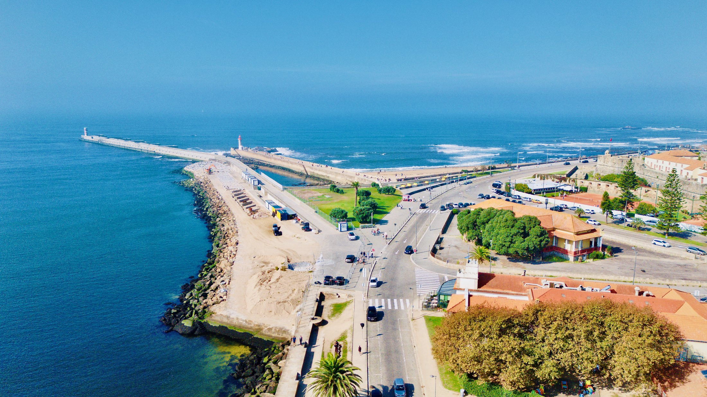

Condomínio Coral
Dois apartamentos T4+1 na Foz do Douro
Apresentado por Cheila Monteiro · CENTURY 21 Arquitectos II
“Há zonas no Porto que dispensam apresentação. A Foz do Douro é uma delas — e por isso cada oportunidade aqui tem um peso diferente no mercado.”
Dois T4+1 que reúnem tudo o que uma família exigente procura: localização, qualidade de vida, acabamentos premium e terraços que fazem a diferença.
Conheça o Condomínio Coral em vídeo
Perto de tudo o que conta
Dois minutos a pé separam estes apartamentos da Universidade Católica e do Colégio Britânico (OBS). A seis minutos está o Jardim do Passeio Alegre. A menos de dez, as praias da Foz. Uma localização que serve famílias com filhos, profissionais internacionais e investidores que conhecem a procura consistente desta zona ao longo do tempo.
Ver no mapa


A Foz do Douro é uma das zonas mais desejadas do Porto: a marginal atlântica, as praias, o Jardim do Passeio Alegre e o farol de Felgueiras à entrada da barra. Ruas tranquilas, moradias clássicas, restaurantes e esplanadas junto ao mar — tudo a poucos minutos do Condomínio Coral.
Forte de São Francisco Xavier e a praia, na marginal da Foz.


Arquitetura contemporânea, jardim privado
Construção nova, com área exterior de lazer e verde, zonas comuns em terrazzo com iluminação embutida e garagem fechada.


Pensado ao detalhe
Com uma distribuição inteligente e acabamentos de alta qualidade, cada apartamento foi pensado ao detalhe para oferecer o máximo conforto e sofisticação. Quatro amplas suítes, todas com closet, garantem privacidade e bem-estar a toda a família. A zona social é ampla, luminosa e funcional, com uma elegante sala de estar integrada na cozinha moderna e totalmente equipada — ideal para receber, conviver e desfrutar do prazer de cozinhar.
“Os acabamentos falam por si.”
Mármore de peça única nas casas de banho, piso radiante, caixilharia minimalista com vãos generosos e climatização eficiente, com certificado energético A. Cada detalhe foi pensado para que estes apartamentos sejam confortáveis, sustentáveis e atemporais.


Os interiores são iguais. O que distingue cada apartamento é o seu terraço.
Em ambos, a sala estende-se para uma varanda e dá acesso ao terraço, complementado pela área exterior de lazer e verde do condomínio.
2.º andar · terraço lateral
Um terraço lateral amplo e reservado, em L, ao longo da sala e das suítes — pronto a ganhar a forma que imaginar: zona de refeições ao ar livre, lounge ou jardim.
- Área útil236 m²
- Área bruta373 m²
- Suítes · casas de banho4 · 5
- Garagem · energia4 lugares · A
3.º andar · terraço na cobertura com vista mar
“Um terraço com vista mar — o elemento que define este imóvel.”
No topo do edifício, um terraço de cobertura com vistas sobre o mar — o maior espaço exterior do Coral, perfeito para momentos únicos de lazer e convívio.

- Área útil236 m²
- Área bruta315 m²
- Suítes · casas de banho4 · 5
- Garagem · energia4 lugares · A
Zona social em open space a poente, quatro suítes com closet a nascente e núcleo de acessos ao centro. Planta ilustrativa, com mobiliário de simulação.
| 2.º andar | 3.º andar | |
|---|---|---|
| Terraço | Lateral, em L | Na cobertura |
| Vista | Envolvente verde | Vista mar |
| Área bruta | 373 m² | 315 m² |
| Interiores | T4+1 · 236 m² | T4+1 · 236 m² |
Os espaços interiores são iguais nos dois apartamentos. Valores e condições de aquisição apresentados pessoalmente pela consultora, em visita ou reunião.
Na Foz do Douro, a esta distância do mar e com estes acabamentos, oportunidades como esta não surgem com frequência.

“Se quer saber mais, agendar uma visita ou perceber todo o processo de aquisição, estou disponível. Fale comigo diretamente.”
Chamada para rede móvel nacional.